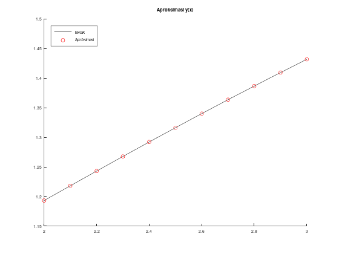
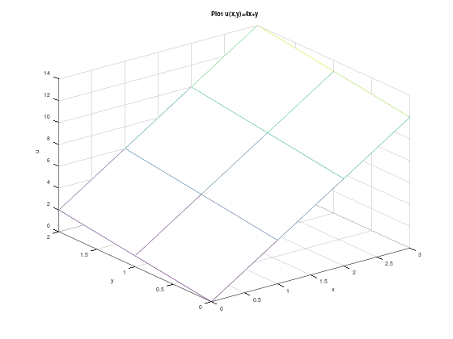
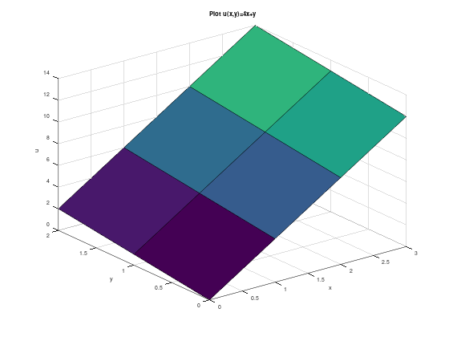
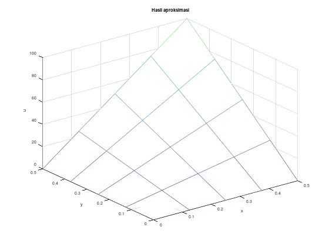
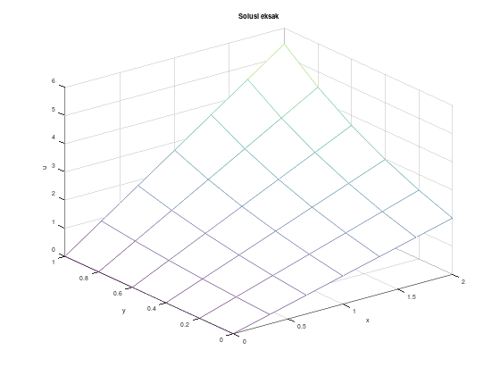
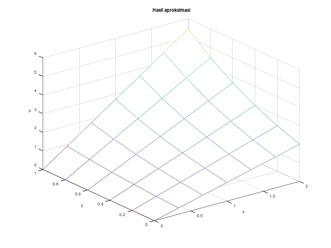

function [x_grid, w_grid] = nonlinear_fd_langsung_on2(f, fy, fyp, a, b, N, alph, bet, tol, M)
h = (b-a) / (N+1);
x_grid = (a : h : b)'; % transpos juga agar menjadi vektor kolom
x = x_grid(2 : N+1);
w = zeros(N, 1);
for i = 1 : N
w(i) = alph + i * ((bet - alph)/(b-a)) * h;
endfor
% banyaknya iterasi
k = 1;
err = tol + 1;
% selama belum memenuhi toleransi ataupun mencapai batas iterasi
while (!(err <= tol) && k != M+1)
% menyusun matriks Jacobian
matriks_J = zeros(N, N);
for i = 1 : N
for j = 1 : N
if (i == j+1) % kiri/bawah diagonal
if (i == 1) % w(0) = alfa
matriks_J(i, j) = -(1 + h/2 * fyp(x(i), w(i), (w(i+1) - alph)/(2*h)));
elseif (i == N) % w(N+1) = beta
matriks_J(i, j) = -(1 + h/2 * fyp(x(i), w(i), (bet - w(i-1))/(2*h)));
else
matriks_J(i, j) = -(1 + h/2 * fyp(x(i), w(i), (w(i+1) - w(i-1))/(2*h)));
endif
elseif (i == j) % pada diagonal
if (i == 1) % w(0) = alfa
matriks_J(i, j) = 2 + h^2 * fy(x(i), w(i), (w(i+1) - alph)/(2*h));
elseif (i == N) % w(N+1) = beta
matriks_J(i, j) = 2 + h^2 * fy(x(i), w(i), (bet - w(i-1))/(2*h));
else
matriks_J(i, j) = 2 + h^2 * fy(x(i), w(i), (w(i+1) - w(i-1))/(2*h));
endif
elseif (i == j-1) % kanan/atas diagonal
if (i == 1) % w(0) = alfa
matriks_J(i, j) = -(1 - h/2 * fyp(x(i), w(i), (w(i+1) - alph)/(2*h)));
elseif (i == N) % w(N+1) = beta
matriks_J(i, j) = -(1 - h/2 * fyp(x(i), w(i), (bet - w(i-1))/(2*h)));
else
matriks_J(i, j) = -(1 - h/2 * fyp(x(i), w(i), (w(i+1) - w(i-1))/(2*h)));
endif
else
matriks_J(i, j) = 0;
endif
endfor
endfor
% menyusun vektor d
d = zeros(N, 1);
% khusus baris pertama
i = 1;
d(i) = -alph + 2 * w(i) - w(i+1) + h^2 * f(x(i), w(i), (w(i+1) - alph)/(2*h));
for i = 2 : (N-1)
d(i) = -w(i-1) + 2 * w(i) - w(i+1) + h^2 * f(x(i), w(i), (w(i+1) - w(i-1))/(2*h));
endfor
% khusus baris terakhir
i = N;
d(i) = -w(i-1) + 2 * w(i) - bet + h^2 * f(x(i), w(i), (bet - w(i-1))/(2*h));
% selesaikan SPL
v = matriks_J \ (-d);
% update w
w = w + v;
% hitung error dengan norm Euclid
err = sum(v.^2);
k += 1; % lanjut ke iterasi selanjutnya
endwhile
% gabungkan w_0 (alfa), dengan w_1, ..., w_N, dengan w_{N+1} (beta)
w_grid = [alph; w; bet];
endfunctionModul 7 Persamaan Diferensial Numerik: Nonlinear Finite Difference, PDP Eliptik & Hiperbolik
Kembali ke Persamaan Diferensial Numerik
Melanjutkan dari modul sebelumnya, untuk masalah nilai batas PDB, kita akan membahas metode
- Nonlinear Finite Difference
Kemudian, kita akan membahas metode numerik untuk menyelesaikan PDP (persamaan diferensial parsial) orde 2
yang eliptik (persamaan Laplace / persamaan Poisson); dan
yang hiperbolik (persamaan gelombang).
Nonlinear Finite Difference
Metode ini digunakan untuk mengaproksimasi masalah nilai batas:
\[ \begin{gathered} y^{\prime \prime}=f\left(x, y, y^{\prime}\right), \quad a \leq x \leq b \\ y(a)=\alpha, \quad y(b)=\beta \end{gathered} \]
dengan \(f\) boleh berupa fungsi linier maupun nonlinier.
Metode ini bersifat iteratif, memanfaatkan yang namanya “metode Newton untuk sistem” yang dibahas di subbab 10.2 buku Burden, yang dibahas di mata kuliah Matematika Numerik. Daripada membahas secara umum mengenai metode Newton untuk sistem, kita cukup membahas bagaimana langkah-langkah metodenya khusus dalam penerapannya sebagai metode nonlinear finite difference untuk menyelesaikan masalah nilai batas.
Langkah-langkah metode nonlinear finite difference bisa ditulis sebagai berikut:
Hitung rumus \(f_y(x,y,y')\) (yaitu \(\frac{\partial f}{\partial y}(x,y,y')\)) dan rumus \(f_{y'}(x,y,y')\) (yaitu \(\frac{\partial f}{\partial y'}(x,y,y')\)) secara analitik.
Tentukan toleransi \(\varepsilon\), dan/atau maksimum banyaknya iterasi \(M\).
Pastikan nilai \(N\) dan step size \(h\) sudah dimiliki. Biasanya hanya salah satu nilai yang diberikan (biasanya \(N\)). Hubungan antara keduanya adalah
\[h = \frac{b-a}{N+1}\]
Ingat bahwa \(w_0 = \alpha\) dan \(w_{N+1} = \beta\). Kita perlu menentukan nilai-nilai \(w_1, \dots, w_N\). Untuk nilai-nilai tersebut, pasang tebakan awal, berupa nilai-nilai di antara \(\alpha\) dan \(\beta\), sebagai berikut untuk \(i = 1, \dots, N\):
\[w_i = \alpha + i\left(\frac{\beta - \alpha}{b-a}\right)h\]
Susun suatu matriks tridiagonal berukuran \(N \times N\) yang dinamakan matriks Jacobian, dengan entri \[J_{ij} = \begin{cases} -\left(1 + \frac{h}{2} f_{y'} \left(x_i, w_i, \frac{w_{i+1} - w_{i-1}}{2h}\right)\right) & \text{di bawah/kiri diagonal, baris ke-$i$} \\ 2 + h^2 f_{y} \left(x_i, w_i, \frac{w_{i+1} - w_{i-1}}{2h}\right) & \text{di diagonal, baris ke-$i$} \\ -\left(1 - \frac{h}{2} f_{y'} \left(x_i, w_i, \frac{w_{i+1} - w_{i-1}}{2h}\right) \right) & \text{di atas/kanan diagonal, barsi ke-$i$} \\ 0 & \text{untuk semua elemen lainnya} \end{cases}\]
Susun vektor kolom bernama \(d\) dengan \(N\) baris, yang isinya sebagai berikut untuk \(i = 1, \dots, N\): \[d_i = -w_{i-1} + 2w_i - w_{i+1} + h^2 f\left(x_i, w_i, \frac{w_{i+1}-w_{i-1}}{2h}\right)\]
Selesaikan SPL \(Jv = -d\) (iya pakai minus), di mana vektor \(v\) berisi nilai-nilai \(v_1,\dots,v_N\) yang ingin diperoleh. Metode penyelesaian SPLnya terserah.
Perbarui vektor \(w\) dengan menambahkan vektor \(v\). Yaitu, nilai \(w_1\) ditambahkan \(v_1\), nilai \(w_2\) ditambahkan \(v_2\), dan seterusnya.
Sampai sini, selesai satu iterasi. Periksa apakah \(\left|\left|v\right|\right| \le \varepsilon\) (atau periksa apakah sudah memenuhi banyaknya iterasi yang diminta). Kalau sudah terpenuhi, metode selesai. Kalau belum, masuk ke iterasi selanjutnya, yaitu melanjutkan kembali dari langkah 5, dengan nilai-nilai \(w_1, \dots, w_N\) terbaru.
Function file (dengan solusi SPL secara langsung)
Berikut ini, matriks Jacobian disusun dengan mempertimbangkan tiap elemen matriks, sehingga kompleksiasnya bisa dianggap \(O(N^2)\):
Daripada mempertimbangkan tiap elemen di matriks Jacobian, kita bisa isi matriksnya dengan nol semua terlebih dahulu, kemudian melihat per baris saja dan hanya mempertimbangkan elemen diagonal dan kolom sebelum/setelah diagonal (karena matriksnya tridiagonal). Kodenya menjadi seperti berikut:
function [x_grid, w_grid] = nonlinear_fd_langsung(f, fy, fyp, a, b, N, alph, bet, tol, M)
h = (b-a) / (N+1);
x_grid = (a : h : b)'; % transpos juga agar menjadi vektor kolom
x = x_grid(2 : N+1);
w = zeros(N, 1);
for i = 1 : N
w(i) = alph + i * ((bet - alph)/(b-a)) * h;
endfor
% banyaknya iterasi
k = 1;
err = tol + 1;
% selama belum memenuhi toleransi ataupun mencapai batas iterasi
while (!(err <= tol) && k != M+1)
% menyusun matriks Jacobian
matriks_J = zeros(N, N); % isi nol semua dulu
for i = 1 : N % untuk tiap baris ke-i, dengan i = 1, ..., N
% kiri/bawah diagonal (kecuali di baris pertama)
if (i == N) % w(N+1) = beta
matriks_J(i, i-1) = -(1 + h/2 * fyp(x(i), w(i), (bet - w(i-1))/(2*h)));
elseif (i != 1) % rumus biasa
matriks_J(i, i-1) = -(1 + h/2 * fyp(x(i), w(i), (w(i+1) - w(i-1))/(2*h)));
endif
% pada diagonal
if (i == 1) % w(0) = alfa
matriks_J(i, i) = 2 + h^2 * fy(x(i), w(i), (w(i+1) - alph)/(2*h));
elseif (i == N) % w(N+1) = beta
matriks_J(i, i) = 2 + h^2 * fy(x(i), w(i), (bet - w(i-1))/(2*h));
else % rumus biasa
matriks_J(i, i) = 2 + h^2 * fy(x(i), w(i), (w(i+1) - w(i-1))/(2*h));
endif
% kanan/atas diagonal (kecuali di baris terakhir)
if (i == 1) % w(0) = alfa
matriks_J(i, i+1) = -(1 - h/2 * fyp(x(i), w(i), (w(i+1) - alph)/(2*h)));
elseif (i != N) % rumus biasa
matriks_J(i, i+1) = -(1 - h/2 * fyp(x(i), w(i), (w(i+1) - w(i-1))/(2*h)));
endif
endfor
% menyusun vektor d
d = zeros(N, 1);
% khusus baris pertama
i = 1;
d(i) = -alph + 2 * w(i) - w(i+1) + h^2 * f(x(i), w(i), (w(i+1) - alph)/(2*h));
for i = 2 : (N-1)
d(i) = -w(i-1) + 2 * w(i) - w(i+1) + h^2 * f(x(i), w(i), (w(i+1) - w(i-1))/(2*h));
endfor
% khusus baris terakhir
i = N;
d(i) = -w(i-1) + 2 * w(i) - bet + h^2 * f(x(i), w(i), (bet - w(i-1))/(2*h));
% selesaikan SPL
v = matriks_J \ (-d);
% update w
w = w + v;
% hitung error dengan norm L2 (Euclid)
err = sum(v.^2);
k += 1; % lanjut ke iterasi selanjutnya
endwhile
% gabungkan w_0 (alfa), dengan w_1, ..., w_N, dengan w_{N+1} (beta)
w_grid = [alph; w; bet];
endfunctionContoh 1
Gunakan metode beda hingga nonlinier (nonlinear finite difference) dengan \(h=0.1\) dan toleransi \(10^{-4}\) untuk mengaproksimasi Boundary Value Problem (BVP) / Masalah Nilai Batas (MNB) berikut: \[ \begin{aligned} y^{\prime \prime} & =y^{\prime}+2(y-\ln x)^3-\frac{1}{x}, \quad 2 \leq x \leq 3 \\ y(2) & =\frac{1}{2}+\ln 2, \quad y(3)=\frac{1}{3}+\ln 3 \end{aligned} \]
Solusi eksak:
\[y(x)=\frac{1}{x}+\ln x\]
Hint:
\[y'' = f\left(x,y,y'\right) = y'+2(y-\ln x)^3-\frac{1}{x}\]
\[f_{y}\left(x,y,y'\right) = \frac{\partial f}{\partial y} \left(x,y,y'\right) = 6\left(y - \ln{x}\right)^2\]
\[f_{y'}\left(x,y,y'\right) = \frac{\partial f}{\partial y'} \left(x,y,y'\right) = 1\]
f = @(x,y,yp) yp + 2*(y-log(x)).^3 - 1./x ; % fungsi f pada y=f(x,y,y')
fy = @(x,y,yp) 6*(y-log(x)).^2; % turunan fungsi f terhadap y
fyp = @(x,y,yp) 1; % turunan fungsi f terhadap y prime, yaitu y'
a = 2; % left boundary
b = 3; % right boundary
N = 9; % banyaknya partisi (pilih N=9 sehingga h=0.1)
alph = 0.5 + log(2); % y(a)
bet = 1/3 + log(3); % y(b)
tol = 10^(-4); % toleransi nilai (untuk kriteria stop)
M = 30; % maksimum iterasi
[x_grid, w_grid] = nonlinear_fd_langsung(f, fy, fyp, a, b, N, alph, bet, tol, M);
% solusi eksak
sln = @(x) 1./x + log(x);
y_eksak = sln(x_grid);
% menghitung error
err_w = abs(y_eksak - w_grid);
err_total = sum(err_w); % norm L1 (taxicab/Manhattan)
% tampilkan tabel
format long;
disp("Tabel aproksimasi, solusi y(x), dan error:");
[x_grid, w_grid, y_eksak, err_w]
disp("Error total (norm L1):");
disp(err_total);
format;
hold on;
fplot(sln, [a, b], 'k');
scatter(x_grid, w_grid, 'r');
title("Aproksimasi y(x)");
legend("Eksak", "Aproksimasi");
legend("location", "northwest");Tabel aproksimasi, solusi y(x), dan error:
ans =
2.000000000000000 1.193147180559945 1.193147180559945 0
2.100000000000000 1.218136665897076 1.218127820919853 0.000008844977223
2.200000000000000 1.243017438585886 1.243002814909725 0.000014623676161
2.300000000000000 1.267709758540398 1.267691731630756 0.000018026909642
2.400000000000000 1.292154898557824 1.292135404020567 0.000019494537257
2.500000000000000 1.316310046093640 1.316290731874155 0.000019314219485
2.600000000000000 1.340144522402694 1.340126829642821 0.000017692759873
2.700000000000000 1.363636945192896 1.363622143380654 0.000014801812242
2.800000000000000 1.386773073873609 1.386762274324015 0.000010799549594
2.900000000000000 1.409544153003318 1.409538323199325 0.000005829803994
3.000000000000000 1.431945622001443 1.431945622001443 0
Error total (norm L1):
1.294282454702422e-04Contoh 2
Selesaikan maslaah nilai batas berikut
\[y'' = \frac{1}{8} \left(32 + 2x^3 - yy'\right), \quad 1 \le x \le 3\] \[y(1) = 17, \quad y(3) = \frac{43}{3}\]
dengan \(h=0.1\), toleransi \(10^{-8}\), dan maksimum iterasi \(M=30\). Bandingkan hasilnya dengan solusi eksak
\[y(x) = x^2 + \frac{16}{x}\]
Hint:
\[y'' = f(x, y, y') = \frac{1}{8} \left(32 + 2x^3 - yy'\right)\]
\[f_{y} (x, y, y') = \frac{\partial f}{\partial y} (x, y, y') = -\frac{1}{8} y'\]
\[f_{y'} (x, y, y') = \frac{\partial f}{\partial y'} (x, y, y') = -\frac{1}{8} y\]
f = @(x, y, yp) ((1/8)*(32 + 2 * x.^3 - y .* yp));
fy = @(x, y, yp) (-yp/8);
fyp = @(x, y, yp) (-y/8);
a = 1;
b = 3;
h = 0.1;
N = (b - a)/h - 1;
alph = 17;
bet = 43/3;
tol = 10^(-8);
M = 30;
[x_grid, w_grid] = nonlinear_fd_langsung(f, fy, fyp, a, b, N, alph, bet, tol, M);
% solusi eksak
sln = @(x) ((x .^ 2) + ((16 ./ x)));
y_eksak = sln(x_grid);
% menghitung error
err_w = abs(y_eksak - w_grid);
err_total = sum(err_w); % norm L1 (taxicab/Manhattan)
% tampilkan tabel
format long;
disp("Tabel aproksimasi, solusi y(x), dan error:");
[x_grid, w_grid, y_eksak, err_w]
disp("Error total (norm L1):");
disp(err_total);
format;
hold on;
fplot(sln, [a, b], 'k');
scatter(x_grid, w_grid, 'r');
title("Aproksimasi y(x)");
legend("Eksak", "Aproksimasi");
legend('location', 'northeast');Tabel aproksimasi, solusi y(x), dan error:
ans =
Columns 1 through 3:
1.000000000000000e+00 1.700000000000000e+01 1.700000000000000e+01
1.100000000000000e+00 1.575450253529389e+01 1.575545454545455e+01
1.200000000000000e+00 1.477173965356983e+01 1.477333333333333e+01
1.300000000000000e+00 1.399567743713438e+01 1.399769230769231e+01
1.400000000000000e+00 1.338629656205142e+01 1.338857142857143e+01
1.500000000000000e+00 1.291425241252499e+01 1.291666666666667e+01
1.600000000000000e+00 1.255753822750665e+01 1.256000000000000e+01
1.700000000000000e+00 1.229932628240154e+01 1.230176470588235e+01
1.800000000000000e+00 1.212652886701783e+01 1.212888888888889e+01
1.900000000000000e+00 1.202881380980783e+01 1.203105263157895e+01
2.000000000000000e+00 1.199791542246045e+01 1.200000000000000e+01
2.100000000000000e+00 1.202714237122990e+01 1.202904761904762e+01
2.200000000000000e+00 1.211101980435058e+01 1.211272727272727e+01
2.300000000000000e+00 1.224502486731439e+01 1.224652173913043e+01
2.400000000000000e+00 1.242538836268850e+01 1.242666666666667e+01
2.500000000000000e+00 1.264894403015380e+01 1.265000000000000e+01
2.600000000000000e+00 1.291301262278355e+01 1.291384615384615e+01
2.700000000000000e+00 1.321531175549766e+01 1.321592592592593e+01
2.800000000000000e+00 1.355388507997838e+01 1.355428571428571e+01
2.900000000000000e+00 1.392704611844152e+01 1.392724137931035e+01
3.000000000000000e+00 1.433333333333333e+01 1.433333333333333e+01
Column 4:
0
9.520101606579345e-04
1.593679763500333e-03
2.014870557925263e-03
2.274866520011187e-03
2.414254141680061e-03
2.461772493353109e-03
2.438423480807472e-03
2.360021871062656e-03
2.238821771113564e-03
2.084577539545052e-03
1.905247817717282e-03
1.707468376690002e-03
1.496871816048184e-03
1.278303978164530e-03
1.055969846202487e-03
8.335310626090831e-04
6.141704282711657e-04
4.006343073346130e-04
1.952608688231550e-04
1.776356839400250e-15
Error total (norm L1):
3.032075680151891e-02
Plot tiga dimensi dan grid
Misalnya kita ingin membuat plot fungsi \(u(x,y) = 4x + y\), setidaknya di titik-titik \(x = 0,1,2,3\) dan \(y = 0, 1, 2\). (Materi ini bisa dianggap perumuman dari materi plotting dua dimensi di Modul 2; kalau lupa, mungkin bisa baca itu dulu.)
Pertama-tama, kita bisa membuat array untuk nilai-nilai \(x\) dan untuk nilai-nilai \(y\) yang kita ingin gunakan untuk plotting
x_arr = [0, 1, 2, 3]
y_arr = [0, 1, 2]x_arr =
0 1 2 3
y_arr =
0 1 2
Apabila fungsi \(u(x,y) = 4x + y\) dihitung di semua titik tersebut, bentuknya akan berupa grid, agar semua kemungkinan nilai \(x\) dicoba dengan semua kemungkinan nilai \(y\).
Caranya, kita susun terlebih dahulu dua grid, yaitu satu grid untuk nilai \(x\) yang berisi nilai \(x\) di posisi yang sesuai, dan satu grid untuk nilai \(y\) yang berisi nilai \(y\) di posisi yang sesuai. Ada fungsi Octave untuk melakukan ini, yaitu meshgrid yang bisa digunakan sebagai berikut.
[x_grid, y_grid] = meshgrid(x_arr, y_arr)x_grid =
0 1 2 3
0 1 2 3
0 1 2 3
y_grid =
0 0 0 0
1 1 1 1
2 2 2 2
Perhatikan,
untuk posisi pertama \(x\), yaitu dengan \(x=0\), satu kolom itu semuanya diisi \(x=0\). Untuk posisi kedua, satu kolom itu semuanya diisi \(x=1\). Begitu juga untuk \(x=2\) dan \(x=3\). Arahnya dari kiri ke kanan.
untuk grid \(y\), mirip dengan grid \(x\), tetapi arahnya dari atas ke bawah (bukan bawah ke atas).
Setelah itu, barulah kita buat grid untuk hasilnya yaitu grid untuk \(u\), dengan menerapkan fungsi \(u\) menggunakan grid \(x\) dan grid \(y\) tersebut.
% contoh fungsi yang ingin kita coba
u = @(x, y) (4 * x + y);% menggunakan fungsinya untuk memperoleh grid u dari grid x dan grid y
u_grid = u(x_grid, y_grid)u_grid =
0 4 8 12
1 5 9 13
2 6 10 14
Terakhir, kita tinggal menggambarnya menggunakan fungsi mesh seperti berikut:
mesh(x_arr, y_arr, u_grid);
title("Plot u(x,y)=4x+y");
xlabel("x");
ylabel("y");
zlabel("u");
Perhatikan,
walaupun tadi arah di grid \(y\) adalah dari atas ke bawah, gambarnya masih dari bawah ke atas seperti biasanya (perhatikan sumbunya).
walaupun tadi kita libatkan
x_griddany_griddalam perhitungan untuk memperolehu_grid, pada akhirnya, yang digunakan untuk plot adalahx_arrdany_arr
Ketika nilai-nilai u_grid ditampilkan, ia ditampilkan sebagai matriks (nilai \(y\) dari atas ke bawah), sehingga mungkin arahnya kurang sesuai dengan gambar (nilai \(y\) dari bawah ke atas), seperti terbalik.
Ada fungsi Octave untuk mem-flip atau membalik arah atas-bawah ini, yaitu flipud (flip up-down)
flipud(u_grid)ans =
2 6 10 14
1 5 9 13
0 4 8 12
Ketika ditampilkan seperti ini, nilai-nilai u_grid terlihat cocok dengan gambar.
Namun, misalkan kita memerlukan nilai \(u(2, 1)\). Bagaimana cara membacanya dari grid?
\(x=2\) ada di indeks 3 di x_arr
find(x_arr == 2)ans = 3\(y = 1\) ada di indeks 2 di y_arr
find(y_arr == 1)ans = 2Sehingga nilai \(u(2,1)\) seharusnya ada di indeks (3,2) dari u_grid…
u_grid(3, 2)ans = 6Hmm, kok aneh? Harusnya kan \(u(2,1) = 4(2)+1 = 9\)?
Karena satu dan lain hal, kita perlu mentranspos matriks grid nya terlebih dahulu:
u_grid'(3, 2)ans = 9Selama berurusan dengan PDP secara numerik, seringkali akan seperti itu; matriks untuk menyimpan/mengakses hasil perhitungan adalah transpos dari matriks yang diberikan ke fungsi mesh.
Kali ini, matriks u_grid menyimpan nilai-nilai untuk mesh, sehingga perlu ditranspos untuk keperluan mengakses hasil perhitungan. Nanti bisa juga sebaliknya, yaitu dimiliki matriks yang menyimpan hasil perhitungan, sehingga perlu ditranspos ketika ingin menggunakan mesh.
(Terlebih lagi, orientasi matriks untuk menampilkan nilai-nilai di grid dengan flipud akan sama dengan orientasi matriks untuk fungsi mesh. Jadi, kalau nantinya perlu ditranspos ketika ingin menggunakan mesh, kita juga perlu mentranspos ketika ingin menggunakan flipud untuk menampilkan nilai-nilai di grid.)
Mengapa harus berurusan dengan transpos? Mari kita lihat lagi bentuk matriks u_grid
u_gridu_grid =
0 4 8 12
1 5 9 13
2 6 10 14
Nilai 9 ada di mana? Harusnya di indeks (3,2). Kalau kita bayangkan itu adalah grid yang terbalik secara atas-bawah. Berarti, dari ujung kiri-atas yaitu indeks (1,1), kita ke kanan dua langkah, lalu ke bawah satu langkah.
Perhatikan: ke kanan dua langkah adalah perpindahan kolom, dan ke bawah satu langkah adalah perpinahan baris. Sedangkan, urutan indeks dalam mengakses nilai pada matriks aalah baris dulu, baru kolom. Karena dimensinya terbalik seperti itu, kita perlu mentranspos sebelum mengakses nilainya.
Kalau kita transpos dulu,
u_grid'ans =
0 1 2
4 5 6
8 9 10
12 13 14
barulah kita bisa menggunakan indeks (3,2), yaitu di baris ke-3, kolom ke-2.
u_grid'(3,2)ans = 9Sedikit tambahan: alternatif dari fungsi mesh adalah fungsi surf
surf(x_arr, y_arr, u_grid);
title("Plot u(x,y)=4x+y");
xlabel("x");
ylabel("y");
zlabel("u");
Bedanya, fungsi surf memberi warna seperti itu. Walaupun terlihat bagus, mungkin plotnya malah menjadi lebih sulit dibaca, sehingga kita akan tetap menggunakan mesh
PDP Eliptik/Laplace/Poisson
Bentuk umum persamaan Laplace
Di mata kuliah Persamaan Diferensial Numerik, PDP orde 2 eliptik yang dibahas adalah persamaan Laplace, atau juga disebut persamaan Poisson.
Bentuk umum dari persamaan Laplace bisa ditulis \[\frac{\partial^2 u}{\partial x^2}\left(x,y\right) + \frac{\partial^2 u}{\partial y^2}\left(x,y\right) = f\left(x,y\right), \quad a < x < b, \quad c < y < d\] \[u\left(x, c\right) = g\left(x, c\right), \quad u\left(x, d\right) = g\left(x, d\right), \quad a \le x \le b\] \[u\left(a, y\right) = g\left(a, y\right), \quad u\left(b, y\right) = g\left(b, y\right), \quad c \le y \le d\] yang disertai nilai step size \(h\) (yaitu \(\Delta x\)) dan nilai step size \(k\) (yaitu \(\Delta y\)).
Perhatikan bahwa ada source function \(f\left(x,y\right)\) (yang bisa saja bernilai nol) dan ada syarat batas semua sisi (karena PDP ini dalam variabel \(x,y\)).
Selain itu, semua syarat batas seolah-olah diberikan oleh satu fungsi \(g\). Namun, biasanya, syarat batas bawah, atas, kiri, dan kanan yang diketahui tampak seperti fungsi yang berbeda-beda (walaupun sebenarnya digunakan satu fungsi yang sama).
Oleh karena itu, untuk kebutuhan praktikum, kita bisa menuliskan bentuk umum persamaan Laplace sebagai berikut:
\[\frac{\partial^2 u}{\partial x^2}\left(x,y\right) + \frac{\partial^2 u}{\partial y^2}\left(x,y\right) = f\left(x,y\right), \quad a < x < b, \quad c < y < d\] \[u\left(x, c\right) = \text{db}\left(x, c\right), \quad u\left(x, d\right) = \text{ub}\left(x, d\right), \quad a \le x \le b\] \[u\left(a, y\right) = \text{lb}\left(a, y\right), \quad u\left(b, y\right) = \text{rb}\left(b, y\right), \quad c \le y \le d\]
Keterangan:
dbbisa diingat down boundary condition, maksudnya syarat batas bawahubbisa diingat upper boundary condition, maksudnya syarat batas ataslbbisa diingat left boundary condition, maksudnya syarat batas kirirbbisa diingat right boundary condition, maksudnya syarat batas kanan
Kita memberi nama yang berbeda-beda untuk fungsi-fungsi syarat batas ini agar lebih mudah nantinya ketika ingin menginput syarat batas.
Lebih lanjut, batasan interval bisa kita tulis
\[\text{xb} < x < \text{xu}, \quad \text{yb} < y < \text{yu}\]
xbbisa diingat “\(x\) (below)”xubisa diingat “\(x\) (upper)”ybbisa diingat “\(y\) (below)”yubisa diingat “\(y\) (upper)”
Ide utama
Metode yang umum digunakan dalam penyelesaian PDP secara numerik adalah metode finite difference, melibatkan yang namanaya diskretisasi, yaitu memecah tiap interval menjadi titik-titik.
Untuk PDP dalam variabel \(x\) dan \(y\), diskretisasi dilakukan sebagai berikut:
interval \(a \le x \le b\) dipecah menjadi titik-titik \(x_i = a + ih\) dengan \(i=0,\dots,m\), yaitu menjadi sebanyak \((m+1)\) titik
interval \(c \le y \le d\) dipecah menjadi titik-titik \(y_j = c + jk\) dengan \(j=0,\dots,N\), yaitu menjadi sebanyak \((N+1)\) titik
Kemudian, hasil aproksimasi solusi PDP pada titik \(\left(x_i, y_j\right)\) ditulis \(w_{i,j}\)
(atau terkadang ditulis \(u_i^j\), atau bahkan \(u_j^n\) untuk titik \(\left(x_j, y_n\right)\))
Diskretisasi untuk penylesaian PDP secara numerik bisa dipandang sebagai perumuman dari proses diskretisasi untuk penyelesaian PDB secara numerik, yaitu perumuman dari \(t_i = a + ih\) atau terkadang ditulis \(x_i = a + ih\).
Untuk persamaan Laplace, hanya ada satu metode finite difference, yang diawali dengan permisalan nilai lambda berikut:
\[\lambda = \left(\frac{h^2}{k^2}\right) = \frac{h^2}{k^2}\]
Ide utama dari metode finite difference untuk persamaan Laplace adalah menuliskan rumus finite difference berikut untuk tiap \(i=1,\dots,(m-1)\) dan juga untuk tiap \(j=1,\dots,(N-1)\):
\[2\left(\lambda+1\right) w_{i,j} - \left(w_{i+1,j} + w_{i-1,j}\right) - \lambda\left(w_{i,j+1} + w_{i,j-1}\right) = -h^2 f\left(x_i, y_j\right)\]
Setelah menuliskan rumus tersebut sebanyak \((m-1)\times(N-1)\) kali, perhatikan bahwa ada beberapa nilai syarat batas yang sudah diketahui dan berupa konstana, misalnya batas bawah \(w_{0,0}, w_{1,0}, w_{2,0}, \dots\) dan batas kiri \(w_{0,0}, w_{0,1}, w_{0,2}, \dots\)
Nilai-nilai yang sudah diketahui tersebut bisa langsung dimasukkan ke dalam persamaan-persamaannya.
Dengan demikian, diperoleh SPL yang terdiri dari \((m-1)\times(N-1)\) buah variabel, yaitu variabel-variabel \(w_{i,j}\) untuk tiap \(i=1,\dots,(m-1)\) dan tiap \(j=1,\dots,(N-1)\).
SPL ini dapat diselesaikan untuk memperoleh semua nilai \(w_{i,j}\) sekaligus.
(Dalam penggunaan Octave, indeks \(0,\dots,m\) dan \(0,\dots,N\) digeser menjadi \(1,\dots,(m+1)\) dan \(1,\dots,(N+1)\) karena indeks array yang dimulai dari 1.)
Penggunaan metode Gauss-Seidel
Sayangnya, tidak ada cara cepat untuk menyusun SPL tersebut. Apabila penyelesaian dilakukan secara manual, tidak masalah; kita tinggal susun SPLnya secara manual, hingga bisa disusun dalam bentuk matriks, baru menyelesaikan SPL dalam bentuk matriks tersebut (yang bisa dilakukan dengan metode langsung seperti OBE, invers, ataupun metode iteratif, atau dengan bantuan komputer).
Apabila PDP eliptik ingin diselesaikan secara program, daripada harus menyusun bentuk SPL secara rapi terlebih dahulu, kita bisa menggunakan metode penyelesaian SPL yang iteratif. Contohnya, metode Gauss-Seidel bisa langsung menggunakan bentuk umumnya, yaitu
\[2\left(\lambda+1\right) w_{i,j} - \left(w_{i+1,j} + w_{i-1,j}\right) - \lambda\left(w_{i,j+1} + w_{i,j-1}\right) = -h^2 f\left(x_i, y_j\right)\]
yang dipindahruaskan agar diperoleh
\[2\left(\lambda+1\right) w_{i,j} = \left(w_{i+1,j} + w_{i-1,j}\right) + \lambda\left(w_{i,j+1} + w_{i,j-1}\right) -h^2 f\left(x_i, y_j\right)\]
\[w_{i,j} = \frac{1}{2\left(\lambda+1\right)}\left(w_{i+1,j} + w_{i-1,j} + \lambda\left(w_{i,j+1} + w_{i,j-1}\right) -h^2 f\left(x_i, y_j\right)\right)\]
Mengingat dari mata kuliah Metode Numerik, metode Gauss-Seidel memang memanfaatkan bentuk persamaan yang seperti ini.
Menggunakan metode Gauss-Seidel, kita tinggal memasang tebakan awal untuk tiap variabel \(w_{i,j}\) (yang bisa dipasang nol semua menurut buku Burden), kemudian mengulang-ulang perhitungan menggunakan rumus tersebut hingga konvergen.
Function file
function [x, y, w] = eliptik_iteratif(f, db, ub, lb, rb, xb, xu, yb, yu, h, k, tol, M)
x = xb : h : xu;
y = yb : k : yu;
m_plus_1 = length(x);
N_plus_1 = length(y);
% susun matriks solusi w_{i,j}
% awalnya berisi nol semua agar sekaligus mengisi tebakan awal
w = zeros(m_plus_1, N_plus_1);
% isi syarat batas (saat ini masih nol semua)
for i = 1 : m_plus_1 % digeser dari i=0,...,m jadi i=1,...,(m+1)
w(i, 1) = db(x(i), yb);
w(i, N_plus_1) = ub(x(i), yu);
endfor
for j = 2 : (N_plus_1 - 1) % digeser dari j=1,...,(N-1) jadi j=2,...,N
w(1, j) = lb(xb, y(j));
w(m_plus_1, j) = rb(xu, y(j));
endfor
% lakukan iterasi metode Gauss-Seidel untuk semua nilai w_{i,j} lainnya
lambd = (h/k)^2;
err = tol + 1; % errornya sembarang dulu, yang penting masuk loop
k = 1;
while (!(err <= tol) && (k != M+1))
old_values = w(2 : m_plus_1 - 1, 2 : N_plus_1 - 1); % selain syarat batas
for i = 2 : (m_plus_1 - 1) % digeser dari i=1,...,(m-1) jadi i=2,...,m
for j = 2 : (N_plus_1 - 1) % digeser dari j=1,...,(N-1) jadi j=2,...,N
w(i, j) = w(i+1, j) + w(i-1, j) + lambd * (w(i, j+1) + w(i, j-1));
w(i, j) += - h^2 * f(x(i), y(j));
w(i, j) /= 2 * (lambd + 1);
endfor
endfor
new_values = w(2 : m_plus_1 - 1, 2 : N_plus_1 - 1); % selain syarat batas
err = max(max(abs(old_values - new_values))); % norm infinity
k += 1; % lanjut ke iterasi selanjutnya
endwhile
endfunctionContoh 1
Selesaikan PDP eliptik
\[\frac{\partial^2 u}{\partial x^2} \left(x,y\right) + \frac{\partial^2 u}{\partial y^2} \left(x,y\right) = 0, \quad 0 < x < 0.5, \quad 0 < y < 0.5\]
dengan syarat batas
\[u(x,0) = 0, \quad u(x, 0.5) = 200x, \quad 0 \le x \le 0.5\]
\[u(0,y) = 0, \quad u(0.5, y) = 200y, \quad 0 \le y \le 0.5\]
secara numerik dengan step size \(h = k = 0.125\), toleransi \(10^{-8}\), dan maksimum iterasi \(M=50\).
f = @(x,y) 0;
db = @(x,y) 0;
ub = @(x,y) 200*x;
lb = @(x,y) 0;
rb = @(x,y) 200*y;
xb = 0;
xu = 0.5;
yb = 0;
yu = 0.5;
h = 0.125;
k = 0.125;
tol = 10^(-8);
M = 50;
[x_arr, y_arr, w] = eliptik_iteratif(f, db, ub, lb, rb, xb, xu, yb, yu, h, k, tol, M);
% menampilkan nilai aproksimasi dalam bentuk seperi grid
disp("Grid nilai aproksimasi:");
disp(flipud(w'));
% gambar mesh hasil aproksimasi
figure;
mesh(x_arr, y_arr, w');
title("Hasil aproksimasi");
xlabel("x");
ylabel("y");
zlabel("u");Grid nilai aproksimasi:
0 25.0000 50.0000 75.0000 100.0000
0 18.7500 37.5000 56.2500 75.0000
0 12.5000 25.0000 37.5000 50.0000
0 6.2500 12.5000 18.7500 25.0000
0 0 0 0 0
Contoh 2
Selesaikan PDP eliptik
\[\frac{\partial^2 u}{\partial x^2} \left(x,y\right) + \frac{\partial^2 u}{\partial y^2} \left(x,y\right) = xe^y, \quad 0 < x < 2, \quad 0 < y < 1\]
dengan syarat batas
\[u(x, 0) = x, \quad u(x, 1) = ex, \quad 0 \le x \le 2\]
\[u(0, y) = 0, \quad u(2, y) = 2e^y, \quad 0 \le y \le 1\]
secara numerik dengan \(m = 6\) dan \(N = 5\), menggunakan metode Gauss-Seidel dengan toleransi \(10^{-10}\) dan maksimum iterasi \(M=100\).
Lalu, bandingkan hasilnya dengan solusi eksak \(u(x,y) = xe^y\)
Hint: perhatikan bahwa ruas kanan di PDP eliptik yang diberikan adalah \(f(x,y) = xe^y\)
f = @(x,y) x .* exp(y);
db = @(x,y) x;
ub = @(x,y) e * x;
lb = @(x,y) 0;
rb = @(x,y) 2 * exp(y);
xb = 0;
xu = 2;
yb = 0;
yu = 1;
m = 6;
N = 5;
h = (xu - xb)/m; % rumus step size: h = (b-a)/m untuk interval a < x < b
k = (yu - yb)/N; % rumus step size: k = (d-c)/N untuk interval c < y < d
tol = 10^(-10);
M = 100;
[x_arr, y_arr, w] = eliptik_iteratif(f, db, ub, lb, rb, xb, xu, yb, yu, h, k, tol, M);
% solusi eksak
sln = @(x, y) x .* exp(y);
[x_grid, y_grid] = meshgrid(x_arr, y_arr);
u_eksak = sln(x_grid, y_grid);
% menampilkan nilai aproksimasi dalam bentuk seperi grid
disp("Grid nilai aproksimasi:");
disp(flipud(w'));
% menampilkan grid solusi eksak
disp("Grid solusi eksak:");
disp(flipud(u_eksak));
% perhitungan error
err_grid = abs(w' - u_eksak); % absolute error
err_total = sum(sum(err_grid)); % norm L1 (taxicab/Manhattan)
disp("Grid nilai error:");
disp(flipud(err_grid));
disp("Error total (norm L1):");
disp(err_total);
% gambar mesh hasil aproksimasi
figure 1;
mesh(x_arr, y_arr, w');
title("Hasil aproksimasi");
xlabel("x");
ylabel("y");
zlabel("u");
% gambar mesh solusi eksak
figure 2;
mesh(x_arr, y_arr, u_eksak);
title("Solusi eksak");
xlabel("x");
ylabel("y");
zlabel("u");Grid nilai aproksimasi:
0 0.9061 1.8122 2.7183 3.6244 4.5305 5.4366
0 0.7420 1.4840 2.2260 2.9679 3.7097 4.4511
0 0.6076 1.2152 1.8227 2.4302 3.0375 3.6442
0 0.4975 0.9950 1.4924 1.9898 2.4870 2.9836
0 0.4073 0.8145 1.2218 1.6290 2.0360 2.4428
0 0.3333 0.6667 1.0000 1.3333 1.6667 2.0000
Grid solusi eksak:
0 0.9061 1.8122 2.7183 3.6244 4.5305 5.4366
0 0.7418 1.4837 2.2255 2.9674 3.7092 4.4511
0 0.6074 1.2147 1.8221 2.4295 3.0369 3.6442
0 0.4973 0.9945 1.4918 1.9891 2.4864 2.9836
0 0.4071 0.8143 1.2214 1.6285 2.0357 2.4428
0 0.3333 0.6667 1.0000 1.3333 1.6667 2.0000
Grid nilai error:
Columns 1 through 6:
0 0 0 0 0 0
0 1.6009e-04 3.1459e-04 4.5177e-04 5.4035e-04 4.8919e-04
0 2.2315e-04 4.3731e-04 6.2391e-04 7.3483e-04 6.4084e-04
0 2.0835e-04 4.0778e-04 5.8003e-04 6.7871e-04 5.8389e-04
0 1.3036e-04 2.5524e-04 3.6345e-04 4.2668e-04 3.7106e-04
0 0 0 0 0 0
Column 7:
0
0
0
0
0
0
Error total (norm L1):
8.6216e-03
